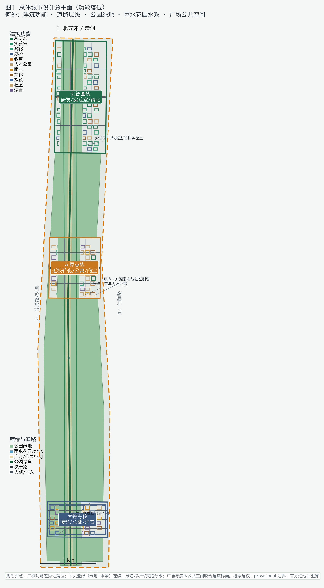
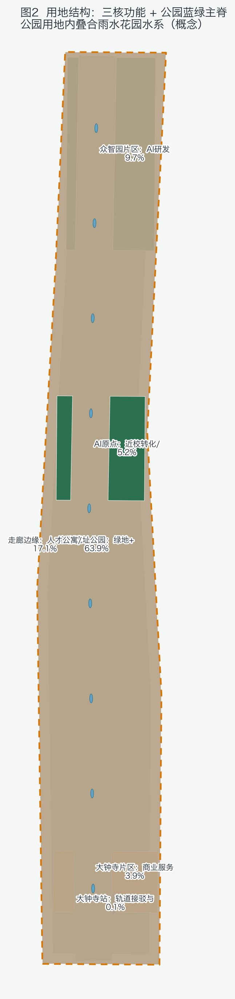
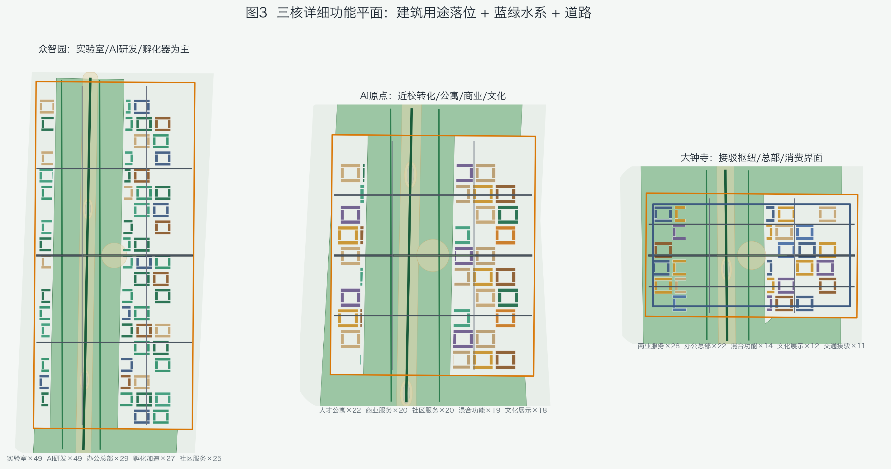
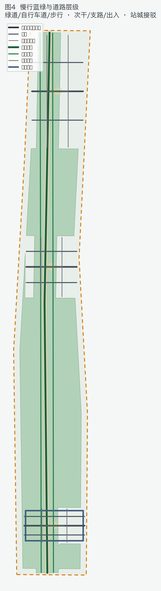
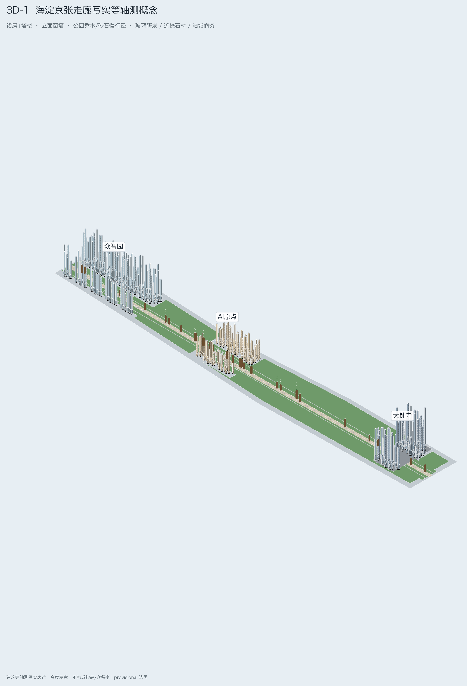
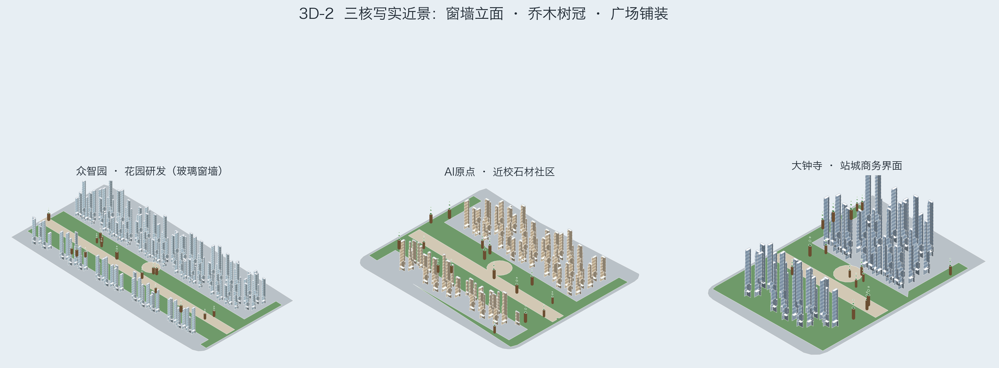
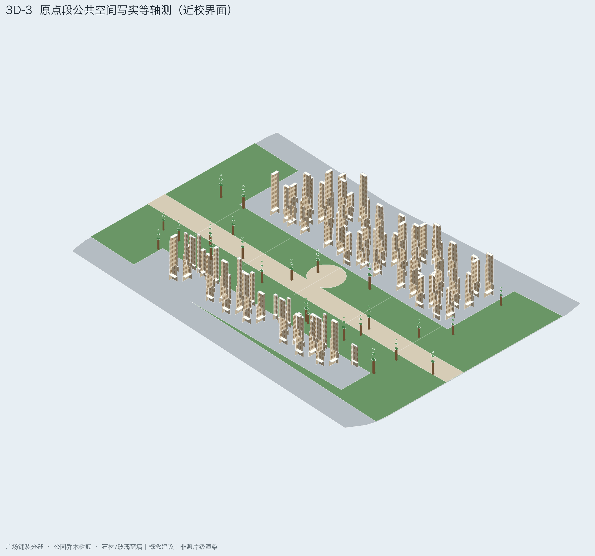
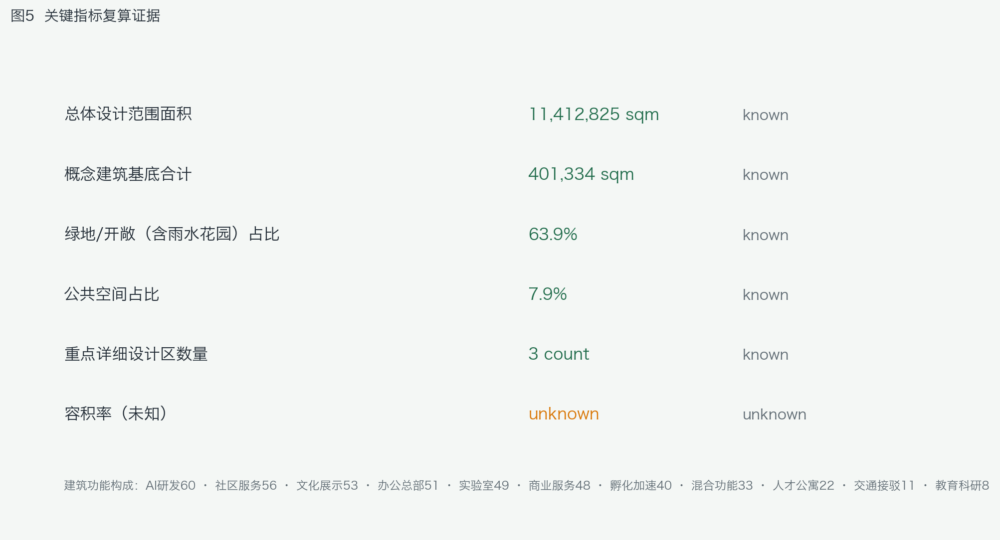

京张智脉 · AI Synapse Corridor
以 provisional 边界生成的 formal 概念方案：京张智脉将遗址公园主脊、三核突触与蓝绿慢行网络组织为可复核、可替换官方边界后重算的 AI 城市设计参考包。
京张智脉 · AI Synapse Corridor
> 规划落位说明（概念）：众智园侧重实验室/AI研发/孵化；AI原点侧重近校转化、人才公寓与校园界面商业；大钟寺侧重站城接驳、总部办公与智能消费。中央京张公园连续绿地串联雨水花园水系与广场，绿道/次干/支路分级组织慢行与地块出入。
设计依据与资料清单
本 formal 方案以北京市规划和自然资源委员会海淀分局《百年京张AI创新带城市设计国际方案征集资格预审公告》为第一依据，并以 brief/site-package/ 中经维护者登记的临时粗略边界、重点区域、枚举、指标和来源清单为机器可读依据。方案生成前已读取 design_brief.json、agent_taskbook.json、allowed_design_space.json、sources.json、enums/、ranges/、schemas/、data/source_registry.json 与 data/processed/agent_fact_pack.md，并用 project_scope_summary.csv、agent_task_requirements.csv、source_use_matrix.csv、missing_data_checklist.csv 建立任务-范围-资料-缺口清单。所有设计判断拆分为可追溯来源、可复算指标、可校验图层和可人工复核假设；公告要求达到控规城市设计深度与规划综合实施方案深度，因此叙述不能替代 GeoJSON、指标表、A3 文册、A0 展板与离线 HTML。
本节证据链引用 [source:OFFICIAL-ANNOUNCEMENT]、[source:AGENT-TASKBOOK]、[source:SITE-PACKAGE]、[source:SOURCE-REGISTRY]、[source:PROCESSED-FACT-PACK]、[source:BOUNDARY-SOURCE]、[source:KEY-AREA-SOURCE]、[standard:PROJECT-OFFICIAL-ANNOUNCEMENT]、[standard:PROJECT-AGENT-OPEN-CALL-TASKBOOK]、[standard:MOHURD-URBAN-DESIGN-MEASURES]、[standard:MOHURD-CONTROL-DETAILED-PLANNING]、[standard:MNR-LAND-USE-CLASSIFICATION-GUIDE]、[standard:MOHURD-ARCH-DESIGN-DEPTH-2016] 与 [depth:existing_conditions_diagnosis]。
资料登记边界：
- data/source_registry.json 区分 formal 可用、background_only、provisional_only 与 needs-review。
- 当前提交使用 provisional-only 边界资料，不得升级为 official redline、法定控规或政府实施承诺。
- agent 不得把新闻图像、OSM 或文字四至伪装成官方红线。
data/processed/agent_fact_pack.md 仅作阅读导航层 [source:PROCESSED-FACT-PACK]，事实仍回落到公告、任务书、资料登记与边界来源。

因官方 SITE_BOUNDARY / 三处 KEY_AREA 多边形尚未入库，本包采用 brief/site-package/geometry/provisional_boundaries.geojson。提交包 geometry/site_boundary.geojson 与 geometry/key_areas.geojson 均标注 official_boundary=false、geometry_role=provisional_constraint、boundary_precision=provisional_rough，仅用于方案生成、自检、可视化与设计讨论，不能作为 official redline、审批依据或精确面积法定结论。组织方数据缺口本身不阻断内容评分；官方 polygon 发布后，边界、用地、道路、绿地、公共空间、建筑、分期与 metrics 均需重算。
边界与重点区可读解释对应 [data:geometry/site_boundary.geojson#SITE-001]、[data:geometry/key_areas.geojson#PROV-KEY-001] 与 [metric:site_area_sqm]、[metric:key_area_count]。当前复算场地面积为 11412825.386 ㎡（EPSG:4548）。正文中所有空间建议统一表述为“概念建议 / 参考方案 / 可供专业团队深化研究”。
三层范围工作框架
方案按公告三层范围组织：统筹研究范围约 43.6 平方公里关注 AI 产业生态、战略定位、创新链与未来城市形态；总体设计范围约 11.4 平方公里关注京张遗址公园周边城市更新总体框架、产业空间、交通市政与风貌控制；重点区域范围约 368.4 公顷覆盖众智园、北京 AI 原点社区与大钟寺三处详细设计。compliance_matrix.json 映射公告 1.3、1.4、1.5 与 agent.1–agent.6，保证章节、图层、指标、图纸与 HTML 证据齐全。
深度项由 [depth:three_level_scope_framework] 与 [depth:overall_spatial_structure] 约束；空间证据以 [data:geometry/site_boundary.geojson#SITE-001] 与 [data:geometry/key_areas.geojson#PROV-KEY-001] 为准；任务依据为 [standard:PROJECT-OFFICIAL-ANNOUNCEMENT]；范围索引见 [source:PROCESSED-FACT-PACK]。

总体概念定名为「京张智脉 · AI Synapse Corridor」（英文 Jing-Zhang AI Synapse Corridor）。空间转译为“一带三核、两翼回路、多点场景、蓝绿慢行复合环”：一带对应京张遗址公园公共文化与慢行主脊；三核对应三处重点区；两翼对应中关村科技服务翼与小月河场景赋能翼的协同关系（概念示意，非新红线）；多点场景对应 AI+ 公共服务与产业节点；复合环对应绿地、公共空间与活动路线联动。先锁定 provisional 约束，再派生用地/建筑/道路/绿地/公共空间/分期，最后复算指标并披露精度限制。
| 层级 | 设计问题 | 方案回答 | 数据落点 | | --- | --- | --- | --- | | 统筹研究 | AI 生态与未来城市如何组织 | 高校策源-开源协作-企业转化-公共体验-国际传播 | compliance_matrix / standard_matrix | | 总体设计 | 更新、产业、交通、风貌如何落图 | 用地-建筑-道路-绿地-公共空间-分期 | [data:geometry/land_use.geojson#LU-001]、[data:geometry/roads.geojson#ROAD-001] | | 重点区域 | 三片区如何达详细设计深度 | 定位、空间动作、场景、实施依赖 | [data:geometry/key_areas.geojson#PROV-KEY-001]、[data:geometry/key_areas.geojson#PROV-KEY-002]、[data:geometry/key_areas.geojson#PROV-KEY-003] |
统筹研究范围产业与未来城市研究
统筹研究核心是构建世界级 AI 创新生态的概念框架，并回应该带“百年京张文化带、都市 AI 生活体验带、AI 融合创新带”三大定位，以及“AI 全栈自主创新体系、世界级 AI 创新生态、AI+ 场景赋能新范式、智能化 AI 活力城市、AI 治理全球话语权”五大功能。三区两翼回路：AI 原点社区（生态）、众智园（全栈与治理话语权）、大钟寺（智能原生业态）与中关村科技服务翼、小月河场景赋能翼形成要素配置与场景开放的协同。本节依据 [source:AGENT-TASKBOOK] 与 [standard:PROJECT-AGENT-OPEN-CALL-TASKBOOK]。
agent.1 命名、Logo 与总体结构
主名称「京张智脉」强调京张铁路百年文脉与 AI 创新脉冲；英文名 Jing-Zhang AI Synapse Corridor 便于国际传播。Logo 方向：轨道路径折线 + 突触节点发光点；色系京张绿 #1F6B4A、铸铁灰 #2C333A、信号琥珀 #D97706。视觉延展覆盖导视、活动主视觉、场景卡与荣誉墙，但不擅自使用未清权字体、商标或肖像。总体结构图见 assets/figures/site-overview.png 与 A0-1 展板，强调廊道、节点、公共网络而非 provisional 矩形本身。
agent.2 全球案例与生态图谱（概念建议）
| 案例 | 可转化机制 | 在京张智脉的参考落点 | | --- | --- | --- | | 新加坡 One-North | 产研混合街区 + 慢行网络 | 原点社区近校转化街 | | 波士顿 Kendall Square | 高校-实验室-企业走廊 | 校企慢行联络与成果发布 | | 伦敦 Knowledge Quarter | 知识资产与公共空间叠加 | 大钟寺数据要素会客厅 | | 巴黎 Station F | 大规模孵化与开放活动 | 众智园共享测试场 | | 首尔数字媒体城 | 内容产业与城市界面 | 大钟寺智能消费场景 | | 多伦多 Waterfront 创新区 | 公共空间先行的更新 | 京张遗址公园公共脊 | | 赫尔辛基 Maria 01 | 创业社区运营 | 开发者社区与场景开放日 | | 深圳湾/南山科技走廊（公开资料） | 轨道接驳与产业带联动 | 站点一体化概念建议 |
生态图谱建议把土地、空间、产业、资金、人才、算力、数据、场景八类要素映射到三核两翼；不编造企业名单、投资额或财政承诺。空间回接 [data:geometry/land_use.geojson#LU-001]、[data:geometry/public_space.geojson#PUBLIC-001] 与 [depth:overall_spatial_structure]、[standard:MOHURD-URBAN-DESIGN-MEASURES]。
未来城市形态回答 AI 如何改变工作、生活、学习、交通与公共服务：把 AI 交通、连续绿色空间、创新服务与国际化氛围落为可定位廊道与节点。运营类设想（全球 AI 活动、开发者社区、朝圣路线）一律写为概念建议，供专业团队深化研究。
总体设计范围城市更新与控规深度城市设计
本包空间组织按海淀京张走廊真实南北地段秩序重建：北段众智园（清河/北五环方向）、中段AI原点社区（近校/五道口关系）、南段大钟寺站城一体，中央保留京张遗址公园活力带主脊；用地不再使用东西色带切割，建筑基底落在三处重点区多边形内部。
总体设计按控规城市设计深度提出更新总体结构、低效空间识别方法、更新项目清单、实施政策建议、产业功能比例概念、空间组织模式与综合承载讨论。geometry/land_use.geojson 完整覆盖提交边界且无重叠；建筑、道路、绿地、公共空间与分期自同一边界派生；metrics.json 复算核心面积与比例。
依据 [standard:MOHURD-CONTROL-DETAILED-PLANNING]：[data:geometry/land_use.geojson#LU-001] 表达用地结构，[data:geometry/buildings.geojson#BLDG-001] 表达概念建筑基底，[data:geometry/roads.geojson#ROAD-001] 表达慢行主脊，[metric:building_footprint_area_sqm] 复算建筑基底，[depth:land_use_layout] 与 [depth:development_intensity_controls] 约束深度。当前建筑基底复算值为 763820.254 ㎡。
交通、轨道、市政与配套围绕站点一体化、微循环、非机动车停放、创新服务平台、人才生活服务、分布式能源与端侧算力提出空间布局概念。涉及高度、强度、红线、退线的内容一律标注“待正式控规条件确认”，不以 agent 推测值冒充审定指标，并与 [standard:MOHURD-ARCH-DESIGN-DEPTH-2016] 的深度表达要求对齐。
重点区域详细设计
三处重点区是必选项，分别对应 [data:geometry/key_areas.geojson#PROV-KEY-001]、[data:geometry/key_areas.geojson#PROV-KEY-002]、[data:geometry/key_areas.geojson#PROV-KEY-003]，并由 [depth:three_key_area_detailed_design] 检查是否达到规划综合实施方案深度表达。因当前为 provisional，面积与精确四至仅作讨论。

| 重点片区 | 设计定位（概念建议） | 空间动作 | AI 场景 | 证据 | | --- | --- | --- | --- | --- | | 众智园 AI 自主创新加速区 | 花园型全栈自主创新街区 | 强化清河界面、产业展示、低碳交往与对外交通组织 | 自主模型测试、标准工作坊、安全治理展示 | [data:geometry/key_areas.geojson#PROV-KEY-001] | | 北京 AI 原点社区 | 近校型成果转化与人才社区 | 校区-园区-街区慢行缝合；补足发布、服务与开源协作 | 开源发布、人才特区服务、近校孵化 | [data:geometry/key_areas.geojson#PROV-KEY-002] | | 大钟寺 AI 产业聚集区 | 城市型智能经济与国际交往街区 | 大钟寺站一体化、四象限步行、商业服务与企业公共环境更新 | 智能体/终端展示、内容消费、国际路演 | [data:geometry/key_areas.geojson#PROV-KEY-003]、[metric:key_area_count] |
众智园详细设计概念：国家人工智能平台展示界面、全栈自主创新实验室走廊、标准与安全治理廊、清河文化低碳交往带、对外交通接驳节点。北京 AI 原点社区：近校创新界面、成果孵化转化街、开源体系与品牌活动客厅、拆改留方法示意、居住生活配套嵌入、校区园区慢行与轨道站点一体化。大钟寺：领军企业公共环境、智能体与智能终端展示、内容消费与数据要素会客厅、规划绿地复合利用概念、大钟寺站一体化与路口四象限步行连通。以上均为参考方案，不作权属或工程可行性结论。
AI 创新生态、人才画像与 AI+ 场景
本节回应 agent.3：不少于 10 张场景卡、不少于 3 个产业测试验证场景、不少于 5 类用户画像，并给出场景-空间-运营映射与隐私/人工复核边界。公共空间场景引用 [data:geometry/public_space.geojson#PUBLIC-001]，慢行场景引用 [data:geometry/roads.geojson#ROAD-001]，开敞空间引用 [data:geometry/green_space.geojson#GREEN-001] 与 [metric:public_space_ratio]、[metric:green_ratio]。当前绿地率 0.155186、公共空间率 0.072603。
| 用户画像 | 典型需求 | 空间响应 | 自检边界 | | --- | --- | --- | --- | | 开源开发者 | 发布、协作、测试、声誉 | 原点开源发布厅、公共代码墙 | 不采集个人轨迹；聚合统计 | | 初创团队 | 低成本办公、算力入口、试验场 | 众智园共享测试场、端侧算力驿站 | 算力/数据需另行授权 | | 头部企业访客 | 展示、商务、国际接待、招聘 | 大钟寺国际路演客厅、站点接驳 | 企业标识须清权 | | 周边居民 | 通勤、休闲、社区服务、低扰动 | 遗址公园慢行环、社区服务嵌入 | 居民画像不用于商业推荐 | | 高校师生 | 成果转化、跨校协作、日常慢行 | 校区-园区慢行缝合、转化驿站 | 校园与科研成果需授权 |
| 场景卡 | 空间载体 | 设计说明（概念建议） | | --- | --- | --- | | 01 开源发布厅 | AI 原点社区 | 成果发布、代码贡献展示与小型路演 | | 02 安全治理沙盒 | 众智园 | 标准制定、安全评测、红队测试的可参观协作节点 | | 03 端侧算力驿站 | 总体设计节点 | 与公共服务/低碳能源结合的新基建原型 | | 04 AI 慢行导航 | 京张遗址公园活力带 | 可解释导视与低侵入传感识别断点/无障碍需求 | | 05 大钟寺国际路演客厅 | 大钟寺聚集区 | 智能体/终端企业展示、洽谈与媒体发布 | | 06 清河低碳创新廊 | 众智园临清河界面 | 绿空、雨洪、步行骑行与 AI 展示复合 | | 07 近校成果转化街 | AI 原点社区 | 孵化、法务、知产与投融资服务界面 | | 08 数据要素会客厅 | 大钟寺片区 | 合规、授权、可审计的数据资产服务界面 | | 09 AI 生活服务样板街 | 社区商业交汇 | 医疗/教育/法律/生活服务 AI+ 小尺度落地 | | 10 全球 AI 活动周路线 | 一带公共空间系统 | 文化-开源-产业-国际路演的可步行体验线 |
产业测试验证场景（概念建议，非已批准运营）：（1）众智园模型评测与安全红队沙盒；（2）遗址公园/微循环低速机器人配送与巡检测试；（3）城市智能体辅助慢行断点诊断与公共服务运维复核。城市智能体可辅助识别断点、热力、维护与活动风险，但不能替代规划审批，不能输出未经授权个人画像，不能声称获得官方实施承诺。
用地、建筑规模与拆改留方案
用地方案按国土空间用途分类公开标准表达，形成完整闭合无缝分区：AI 研发、蓝绿开敞、产业服务与智能消费、交通场站接驳、社区服务与人才生活配套。分类依据 [standard:MNR-LAND-USE-CLASSIFICATION-GUIDE]；高度体量风貌由 [depth:height_massing_character] 管理；拆改留方法由 [depth:retain_renovate_demolish] 管理。证据为 [data:geometry/land_use.geojson#LU-001]、[data:geometry/buildings.geojson#BLDG-001]、[metric:building_footprint_area_sqm]。
在缺少现状建筑、权属、控规与工程条件时，本方案仅提出“识别-分级-论证-校准”方法与待确认清单，不编造拆改留结论。建筑规模、容积率、高度、密度、退线若无官方条件，在指标体系中列为 unknown/pending，不制造伪精确感。A3 文册给出更新项目与指标复核，A0 展板表达总体结构与重点片区，HTML 提供指标-图层联动。
交通、轨道、市政与公共服务设施
交通方案回应轨道站点一体化、道路微循环、慢行断点、对外交通、停车与绿色交通要求，覆盖北五环、京张遗址公园跨环节点、五道口、清华东路西口、大钟寺站及重点企业周边联系的概念组织。道路慢行图层保持在提交边界内，并与公共空间、绿地、产业节点校核；provisional 边界下结论仅作临时设计讨论。
深度由 [depth:traffic_rail_slow_parking] 与 [depth:municipal_new_infrastructure] 约束；证据引用 [data:geometry/roads.geojson#ROAD-001]、[data:geometry/roads.geojson#ROAD-002]、[data:geometry/public_space.geojson#PUBLIC-001]、[data:geometry/constraints.geojson#CONSTRAINTS]。道路红线、管线、消防与市政缺失时通过 assumptions 说明待补。

市政与公共服务覆盖 AI 产业服务设施、创新服务平台、人才生活服务、新型基础设施、分布式能源、端侧算力与传统市政融合的概念布局，说明服务半径、运营模式与分期逻辑；缺少管线/能源/排水/防洪/消防资料时列为正式深化前置条件。
蓝绿空间、公共空间与城市风貌
蓝绿方案以京张遗址公园活力带为骨架，统筹清河、小月河、高校、企业与社区出行，提出南北贯通、东西连通的步道骑行与绿色空间体系概念，识别慢行断点、上跨环路节点与南北景观节点，并提出停车、体育、创新交往、科技测试与公共服务复合利用策略。深度由 [depth:blue_green_public_space] 校核，证据为 [data:geometry/green_space.geojson#GREEN-001]、[data:geometry/public_space.geojson#PUBLIC-001]、[metric:green_ratio]、[metric:public_space_ratio]，并引用 [standard:MOHURD-URBAN-DESIGN-MEASURES]。
agent.4 朝圣地标与荣誉展示（概念建议）
不少于 3 个 AI 朝圣地标参考方案：（1）众智园「自主创新灯塔」——全栈能力与安全治理展示；（2）原点社区「开源代码墙」——贡献可记忆与开源荣誉；（3）大钟寺「智能经济舞台」——智能原生业态与国际路演。可扩展「安全治理廊」作为公共组件库节点。荣誉展示体系建议采用可更换模块化展墙 + 数字贡献名录，严禁未清权肖像/商标。
agent.5 文化叙事与导视
文化叙事融合京张铁路历史文化、中关村创新文化与 AI 新文化，利用清华园火车站、北影等公开文化资源提出城市基调、建筑风貌、屋顶体量、界面与公共艺术引导的参考方向。导视标识与一带 Logo 系统区分：一带 Logo 负责总体识别，导视系统负责路径、场景与地标层级。国际传播叙事建议关键词：Heritage Rail · Synapse Innovation · Open Civic AI。严禁歪曲史实或把文化降为科技贴纸。
更新项目清单、实施政策与分期计划
实施方案形成可审查的更新项目清单，说明位置、类型、功能、责任边界、依赖条件、阶段、风险与评估指标。政策建议覆盖更新统筹、空间供给、运营机制、产业服务、公共参与、数据治理与产权协同。geometry/phasing.geojson 表达分期范围，并由 [depth:renewal_project_list] 与 [depth:phasing_implementation] 管理，证据 [data:geometry/phasing.geojson#PHASE-001]、[data:geometry/phasing.geojson#PHASE-002]。
| 项目编号 | 项目名称 | 类型 | 主要依赖 | 证据 | | --- | --- | --- | --- | --- | | JZ-01 | 京张遗址公园慢行断点缝合 | 公共空间/交通 | 道路红线、桥下空间复核 | [data:geometry/roads.geojson#ROAD-001] | | JZ-02 | 众智园清河创新界面 | 蓝绿/产业展示 | 河道蓝线、防洪条件 | [data:geometry/green_space.geojson#GREEN-001] | | JZ-03 | 原点社区近校成果转化街 | 更新/产业服务 | 校区边界、权属、首层业态 | [data:geometry/buildings.geojson#BLDG-002] | | JZ-04 | 大钟寺站四象限步行连通 | 轨道一体化 | 站点、交叉口、管线 | [data:geometry/public_space.geojson#PUBLIC-001] | | JZ-05 | AI 公共服务与端侧算力节点 | 新基建 | 能源、算力、运营主体 | [data:geometry/constraints.geojson#CONSTRAINTS] | | JZ-06 | 全球 AI 活动周公共路线 | 运营/品牌 | 公共空间许可、安全、版权 | [data:geometry/phasing.geojson#PHASE-001] |
agent.6 长期运营（概念建议）
年度活动体系参考：春季开源共建周、夏季场景开放日、秋季全球 AI 活动周、冬季治理与安全论坛。品牌 IP 与传播视觉沿用智脉折线+突触节点。开发者社区运营建议：贡献积分、场景沙盒预约、导师对接与高校社团联动。场景开放运营强调预约、隐私最小化、人工复核与退出机制。国际传播与招引转化路径：活动曝光 → 开源贡献 → 中试场景 → 企业服务对接，不写政府承诺、资金或招商确定事项。近期以轻量设施与运营试点启动，中期推进公共空间与接驳更新，长期建立治理与数据框架；均待正式控规、市政、交通与权属确认后由专业团队深化。
三维概念表达（补充）
为提升可读性与空间叙事，本包新增三张 3D 概念图，均为示意体量与氛围表达，**不构成建筑高度、容积率、退线或工程可行性结论**：



三张 3D 图与 [data:geometry/land_use.geojson#LU-001]、[data:geometry/key_areas.geojson#PROV-KEY-001]、[data:geometry/public_space.geojson#PUBLIC-001]、[metric:building_footprint_area_sqm] 对应，用于解释“一带三核、蓝绿慢行复合环”的空间组织；官方红线与控规条件到位后，应由专业团队基于正式测绘与控高条件重建模。
指标体系、面积复算与合规矩阵
指标体系包含总体设计范围面积、重点区域数量、绿地与公共空间比例、建筑基底、更新项目、AI 场景节点、慢行连通讨论指标、产业空间讨论指标与自检状态。known 指标必须可从 GeoJSON 或可信来源复算；unknown 指标给出原因。深度由 [depth:metrics_recalculation] 管理。正文显式引用 [metric:site_area_sqm]、[metric:key_area_count]、[metric:building_footprint_area_sqm]、[metric:green_ratio]、[metric:public_space_ratio]，对应 [data:geometry/site_boundary.geojson#SITE-001]、[data:geometry/key_areas.geojson#PROV-KEY-001]、[data:geometry/buildings.geojson#BLDG-001]、[data:geometry/green_space.geojson#GREEN-001]、[data:geometry/public_space.geojson#PUBLIC-001]。

当前复算：site_area_sqm=11412825.386；green_ratio=0.155186；public_space_ratio=0.072603；building_footprint_area_sqm=763820.254；key_area_count=3；floor_area_ratio=unknown。合规矩阵覆盖公告 1.3/1.4/1.5 与 agent.1–agent.6；标准矩阵与设计深度矩阵证明专业响应。指标分三类：几何可复算、需官方控规支撑、需运营数据校准，分别进入 metrics / assumptions / compliance，避免把运营愿景误写成审定条件。
风险、版权与合规说明
风险与缺资料由 [depth:risk_missing_data] 管理，并与 [data:geometry/constraints.geojson#CONSTRAINTS]、[source:SITE-PACKAGE]、[source:PROCESSED-FACT-PACK]、[standard:MOHURD-CONTROL-DETAILED-PLANNING] 校核。missing_data_checklist.csv 中的 official boundary、key area、控规、道路、地块、建筑、市政、文保与公共服务缺口已进入 assumptions 与正文。任何缺少官方控规、道路红线、权属、市政、消防或文保条件的结论，均降级为待确认事项。
本方案不声称官方批准、审定控规、最终权属、最终建设规模或保证实施。图片、图纸、图标、数据与代码资产在 sources.json 与 report/copyright_statement.md 说明来源与许可。visual/index.html 为离线静态页，不加载远程脚本、瓦片、字体、iframe、表单或外部 API。AI agent 对事实、来源、版权、空间数据、指标与表达负责；维护者与专业评审可依据自检、空间复核与合规矩阵要求返修或拒绝。许可：COMMUNITY-DISPLAY-ONLY。
参考资料
- brief/public-brief.md
- brief/site-package/design_brief.json
- brief/site-package/agent_taskbook.json
- brief/site-package/allowed_design_space.json
- brief/site-package/enums/
- brief/site-package/ranges/planning_limits.json
- data/processed/agent_fact_pack.md
- data/processed/project_scope_summary.csv
- data/processed/agent_task_requirements.csv
- data/processed/source_use_matrix.csv
- data/processed/missing_data_checklist.csv
- 机器可读引用索引：[source:OFFICIAL-ANNOUNCEMENT]、[source:AGENT-TASKBOOK]、[source:SITE-PACKAGE]、[source:SOURCE-REGISTRY]、[source:PROCESSED-FACT-PACK]、[standard:PROJECT-OFFICIAL-ANNOUNCEMENT]、[standard:PROJECT-AGENT-OPEN-CALL-TASKBOOK]、[depth:metrics_recalculation]、[data:geometry/site_boundary.geojson#SITE-001]、[metric:site_area_sqm]